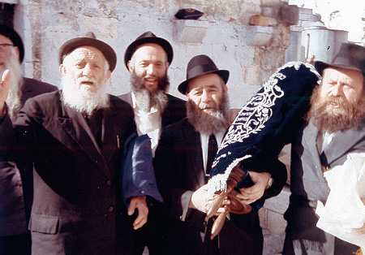

The Rebbe Sends Two Torahs on Yud-Alef Nissan
On 11 Nissan, the Rebbe sent two Sifrei Torah to a new neighborhood called Nachalat Har Chabad, a neighborhood in Kiryat Malachi. On Chol HaMoed Pesach there was a festive event that was attended by Chassidim from all over the country. * Why did this new neighborhood merit such a special gift? Why t

Torah arrives in Yerushalayim. Front row from right to left: R’ Zushe Partisan, R’ Yaakov Yehuda Majeski and R’ Avrohom Zaltzman
Chol HaMoed Pesach 5729/1969
The fledgling neighborhood, Nachalat Har Chabad in Kiryat Malachi, looked festive and it wasn’t only because it was Pesach. It was no ordinary day, for on this day, two Sifrei Torah that were sent by the Rebbe for the new settlers would be brought to the local Chabad shul.
Word got around about how the Rebbe regarded these two Sifrei Torah in a most unusual fashion, the likes of which had never been seen in Lubavitch. It was said that the Rebbe gave his sirtuk to Rabbi Chadakov so he would wear it when he escorted the Sifrei Torah to the airport. This in itself was enough to show how highly the Rebbe regarded these Sifrei Torah.
In an atmosphere of great joy, with Chassidic song and dance, the new residents of Nachala escorted the Sifrei Torah that the Rebbe had sent on Erev Pesach to the shul which, at the time, was nothing but a shed. Residents of Kiryat Malachi gathered in the afternoon in the central plaza of the town, opposite the local municipality buildings. They were joined by hundreds of Lubavitcher Chassidim who came from Kfar Chabad, Lud, and Yerushalayim. Children of the elementary schools in Lud and Kfar Chabad led the way carrying torches as they walked to the new neighborhood. Chassidim danced alongside Russian immigrants. It was an extraordinary Pesach indeed.
KIRYAT MALACHI
Hachnasas Seifer Torah on Pesach
Very few places had the z’chus of receiving Sifrei Torah from the Rebbe. None of us knows why a certain place had this privilege over another. As such, the goal in this article is not to speculate but to survey those places that received Sifrei Torah from the Rebbe.
***
The Nachalat Har Chabad neighborhood was founded at the Rebbe’s behest at the beginning of Adar 5729/1969. The Rebbe was involved in every step that was taken, and he constantly encouraged those involved in the project. The Rebbe also sent monetary aid to Nachala, but without a doubt, the most special gift was the two Sifrei Torah that the Rebbe gave the new neighborhood.
Preparations for the shipment began with the selection of two Sifrei Torah that were picked from the many Sifrei Torah in the Aron Kodesh in 770. They were brought to the Rebbe’s room and mantles were made for them upon which was embroidered: The Chabad shul in Nachalat Har Chabad in Eretz Yisroel, may it soon be rebuilt. Sent by: K’vod K’dushas Admur shlita (Lubavitch).
The two Sifrei Torah were very different from each other. One was small and it had a white mantle sewn for it. The other Torah was quite large and had a black mantle made for it. When the mantles were finished, the Sifrei Torah were returned to the Aron Kodesh.
Why were two Sifrei Torah sent? This question was posed by the Rebbe’s brother-in-law, Rashag, during the Pesach meal that took place at the Rebbe Rayatz’s home. The Rebbe explained very simply that the Sifrei Torah were sent for Pesach, when there is a need to take out two Sifrei Torah.
The Rebbe instructed that an entourage of ten Chassidim escort the Sifrei Torah to Kennedy airport, three of whom were to be members of the Kollel in Crown Heights. The Rebbe said that Rabbi Zalman Shimon Dworkin, the rav of Crown Heights, should choose the three men.
The transfer was set for Yud-Alef Nissan, the Rebbe’s birthday. On that day, the Rebbe went to the Ohel. Before he left, he went to the large zal of 770 together with Rabbi Binyomin Gorodetzky and his secretaries, Rabbi Chadakov, Rabbi Klein and Rabbi Groner. The Rebbe went over to the Aron Kodesh where the gabbai of the beis midrash, Rabbi Yochanan Gordon was standing. The Rebbe gave him $200 towards the purchase of the Sifrei Torah that had been chosen ahead of time.
The Rebbe smiled at Rabbi Gordon and blessed him, “You should live until Moshiach.” One Torah was given by the Rebbe to Rabbi Chadakov and the other one was given to Rabbi Gorodetzky. They brought them up to the small shul on the first floor of 770 (the small zal). When they entered the shul, the Sifrei Torah were given to the Rebbe, who passed them to Rabbi Chadakov who put them in the Aron Kodesh.
Then the Rebbe went to the Ohel. When he returned, he davened Mincha. After Mincha, the Sifrei Torah were removed from the Aron Kodesh. With the Rebbe wearing Shabbos clothing and a gartel, he accompanied the Sifrei Torah until Rabbi Klein’s car. The elder Chassidim, Rabbi Eliyahu Yochil Simpson, Rabbi Shlomo Aharon Kazarnovsky, and Rabbi Zalman Duchman were already standing around the car. Many Chassidim and bachurim stood at a distance.
Rabbi Manny Wolf, a student in 770 at the time who was present and even photographed the Rebbe, wrote in his diary what happened next:
“Rabbi Klein opened the car doors and put the Sifrei Torah in the car. Rabbi Gorodetzky was going to travel with the scrolls to Eretz Yisroel and Rabbi Chadakov was going to accompany them to the airport and then return. I saw the Rebbe talking to Rabbi Chadakov and giving him a key. It turned out that the Rebbe told Rabbi Chadakov to escort the Sifrei Torah while wearing a sirtuk.
“As is known, Rabbi Chadakov wore a suit during the week, so the Rebbe told him to go to his (the Rebbe’s) room and take the Rebbe’s sirtuk! The Rebbe gave him the key to his room so that upon his return from the airport, if the Rebbe was not in his room, Rabbi Chadakov could return the sirtuk.”
The entourage left for the airport. The crowd escorted the car until the corner. At the airport, Rabbi Nosson Gurary reviewed a maamer Chassidus.
At Ben Gurion airport in Lud, a delegation of rabbanim and distinguished people was waiting to welcome Rabbi Gorodetzky and the Sifrei Torah.
Anash from all over Eretz Yisroel and the residents of Nachalat Har Chabad in particular were thrilled to hear about the two Sifrei Torah that the Rebbe had sent to them. Along with the Sifrei Torah, the Rebbe sent a special letter in which he wrote that he did not have to explain why he had sent the Sifrei Torah but quoted a letter from the Rebbe Rayatz at length, from the time he had sent Sifrei Torah to the founders of Kfar Chabad. In that letter, the Rebbe Rayatz wrote that one needs to contemplate the Divine Providence which brought the settlers to the land that has the eyes of G-d upon it, and the Torah would be a sign and reminder to arrange their lives according to the Torah and to raise their sons and daughters in the way of the Torah without compromising.
The Hachnasas Sifrei Torah celebration took place on 19 Nissan, the fourth day of Chol HaMoed and was attended by local Lubavitchers as well as Chassidim from all over the country. The next day, an article appeared in the Yediot Acharonot about the event.
Some years later, a shul was built for the Chabad Chassidim and the members of the Georgian k’hilla continued davening in the old shul. The large Torah remained in the old shul and the small Torah was brought to the new Chabad shul. Over time, many problems arose with this Torah. It was just a few years ago that money was raised to correct it. After much work, the Torah was fixed and a crown was purchased for it that is just like the crown on the small Torah in 770, which is known as “the Rebbe’s Seifer Torah.”
The high point of the year is on Simchas Torah when everyone wants to dance a hakafa with it, although some have to suffice with a kiss of respect for the Torah that was given as a gift from the Rebbe.
KIRYAT GAT
Two Sifrei Torah for Romanian Jews
The Mayor of Kiryat Gat, Gideon Naor, who helped found Yeshivas Tomchei T’mimim in Kiryat Gat, was in America during the summer of 5721/1961. He had a yechidus with the Rebbe in which he asked for help with the religious needs of his constituents.
Upon his return to Eretz Yisroel, the Rebbe wrote to him that right after their conversation, he had begun making efforts on behalf of the shuls of his town and he had managed to obtain two Sifrei Torah. There were delays in the shipment of the Torah scrolls, which is why the Rebbe wrote him that despite his alacrity, difficulties had arisen in getting the Sifrei Torah to their destination.
On 16 Adar I, the Rebbe wrote him a letter that starts off about an “Evening with Chabad” in Kiryat Gat, at the end of which he writes about the Sifrei Torah:
With sadness and great dismay I understood from your letter that as of now, the two Sifrei Torah which were already sent have still not reached you. Perhaps they were delayed by the [government] offices. In any case, I immediately wrote to our activists in Eretz Yisroel with the request that they look into the matter and hasten things as much as possible. (Igros Kodesh vol. 22, letter # 8388)
The Sifrei Torah eventually arrived in Kiryat Gat. Thus, the Rebbe helped the residents of the small town, most of whom were new immigrants from Romania and Morocco.
MOSHAVIM AND KIBBUTZIM
“Can we publicize that the Rebbe donated four Sifrei Torah?”
In 5725/1965, Rabbi Menachem HaKohen, rabbi of the Labor Settlements made a special visit to the Rebbe. Various issues came up that he was involved in. He raised the topic of Sifrei Torah which were lacking on the kibbutzim and moshavim of Eretz Yisroel. Rabbi Cohen later wrote what happened:
“There was a dearth of Sifrei Torah on the moshavim and kibbutzim, so I went to the United States to gather Sifrei Torah. The Rebbe received me with unusual warmth and asked: ‘Reb Menachem, what brings you here this time?’ I told the Rebbe about the Sifrei Torah I was trying to gather. The Rebbe rang the bell and asked (probably of Rabbi Chadakov) to send Yudel in. Rabbi Krinsky came in and the Rebbe said to him: ‘I would like you to give Reb Menachem four Sifrei Torah.’
“Within a short time, I was given four Sifrei Torah, properly packed [for transport]. The Rebbe said: ‘You can do as you see fit with the Sifrei Torah, giving them to a place that needs them, as you like. However, I have a request – since you told me that a shul was opened in Degania, I would be very pleased if one Torah is given there.’
“Then I asked the Rebbe whether it was all right to publicize that he donated four Sifrei Torah to us. The Rebbe smiled and said: ‘That which is forbidden to do in public is forbidden in private. You can publicize it as you see fit, but you need to weigh it. True, on the one hand, it can inspire others to contribute. On the other hand, it can prevent certain others from doing so.’”
***
The Rebbe’s response was prescient, for within a short time a letter was sent by Yosef Dekel, a public figure with close ties to Chabad who complained about the decision to give Sifrei Torah to certain places. In a letter of 27 Nissan 5725, the Rebbe told him it wasn’t he who decided which places would receive the Sifrei Torah:
Apparently you received incorrect information, for when I spoke with Rabbi HaKohen regarding the Sifrei Torah that were being sent to Eretz Yisroel … I emphasized explicitly that I do not want to differentiate between one moshav and another, and one kfar and another. It should just be a place where the Torah will be used. I emphasized explicitly that I would not give it to a certain mosad or kfar so that there would be no room to find any prejudice in my words which is the opposite of my intention.
I asked that when they give it to a certain place, it should be emphasized that it wasn’t I who sent it to that particular place, for that is not my issue. They could only say that the Torah was sent from Lubavitch headquarters here, but not that it was decided ahead of time to which location and mosad it would be sent, since that would automatically negate other mosdos or locations … Obviously, a Seifer Torah sent from here, or any Seifer Torah for that matter, should not be utilized for such things. (Igros Kodesh vol. 23, p. 377)
EIN CHAROD – ICHUD
What did Rabbi Menachem HaKohen do with the Sifrei Torah that he was given? We do not have a precise answer to that question, but one of the s’farim was sent to Kibbutz Ein Charod – Ichud.
Some background: At Kibbutz Ein Charod there was a shul, but a bitter political debate erupted which split the kibbutz in two: Kibbutz Ein Charod-Ichud and Kibbutz Ein Charod-M’uchad. The shul building was in “M’uchad” while a temporary structure was built in “Ichud” for a shul.
Some of the members of “Ichud” wanted a permanent structure for a shul, but this engendered another acrimonious argument that resulted in reactions for and against each side in the national newspapers. The dedication of the shul finally took place on 16 Teves 5729 at which time several Sifrei Torah were brought to the shul, including one from the Rebbe.
Two days after the celebration, a report appeared in one of the newspapers:
“The first Beit Knesset (synagogue) in the Kibbutz movement in the Jezreel Valley was dedicated on Monday, in Kibbutz Ein Charod-Ichud. The Beit Knesset was founded through the initiative of members of the farmstead as a gesture towards the parents of those members who are still particular about tradition and the observance of mitzvos. The driving force was the member of the farming commune, Ezriel Doron… Four Torah scrolls were placed inside the Aron HaKodesh, two of which were purchased by parents of members and two that were received from the Department for the Provision of Religious Needs of the Histadrut (national labor union). Of those, one was a gift of the Lubavitcher Rebbe from the United States.”
Ezriel Doron a”h, who was the spirit behind the founding of the shul and who received the great gift from the Rebbe, maintained the shul over the next many years and prepared the boys of the kibbutz and the area for their bar mitzva.
YERUSHALAYIM
The Tzemach Tzedek shul
We’ll close with the story of the Torah that was sent to the Tzemach Tzedek shul, an old Chabad shul in the Old City of Yerushalayim. After the Six-Day War, Chabad Chassidim returned to the shul; upon the Rebbe’s instruction they began carrying out Chabad activities. In order to encourage them, the Rebbe sent a Torah with Rabbi Yaakov Yehuda Majeski, the Menahel Ruchni of the Beis Rivka School in Crown Heights. The Torah arrived the day after Shushan Purim 5729/1969.
At four in the afternoon, the Torah left the Kosel accompanied by a festive entourage, torches, music and dancing. The traditional hakafos took place at the Tzemach Tzedek shul.
BOX:
CELEBRATION IN HONOR OF THE REBBE’S TORAH
The question has been raised: Does one celebrate a Hachnasas Seifer Torah even for an old Torah that was already used and is now being brought to a new shul?
This question was addressed by Rabbi Yosef Simcha Ginsberg in Hiskashrus #504. Here is the quote regarding the Sifrei Torah that were sent by the Rebbeim:
“Rabbi Yitzchok Yehuda Yaroslavsky, mara d’asra of Nachalat Har Chabad, said that when a Torah from the Rebbe Rayatz arrived in Kfar Chabad upon its founding in 5709, they held a Hachnasas Seifer Torah even though it was an old Torah. So too, in 5729, with the founding of the Nachalat Har Chabad neighborhood of Kiryat Malachi, when two Sifrei Torah were sent by the Rebbe which were both old, all details of the customs of a Hachnasas Seifer Torah were observed (except for keeping pieces of the mantle as a segula).
“In 5729, it was with the knowledge and consent of the Rebbe [and they probably emended the Sifrei Torah before they were sent]. Perhaps [Rabbi Groner notes] this should be done only when Chassidim receive a Torah from the Rebbe, at which time there is good reason to make hakafos and an all out event, of course.”
Shneur Zalman Berger. "The Rebbe Sends Two Torahs on Yud-Alef Nissan." Beis Moshiach, no. 829 (March 29, 2012).